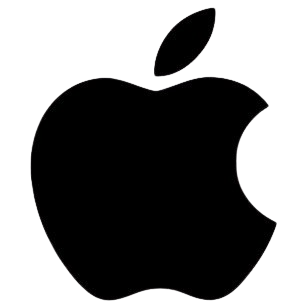
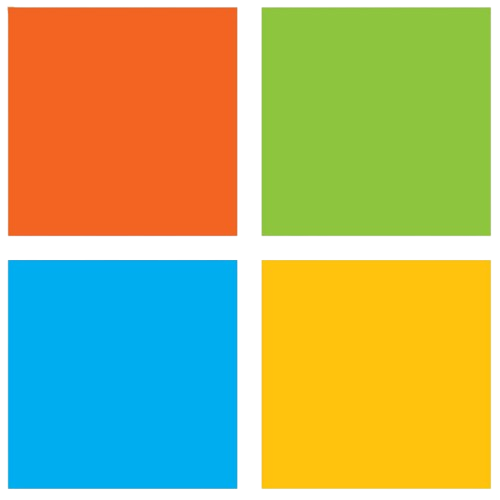

🙋♂️ Qui suis-je ?
🛤️ Mon parcours
🎓 Certifications et diplômes
💼 Expériences professionnelles
🧠 Compétences
🛠️ Projets
📰 Veilles technologiques
📄 Mon CV
✉️ Contact
📰 Veilles technologiques 📰
Une sélection de sources fiables pour rester à jour sur les avancées technologiques.

Apple Newsroom
↗
Actualités officielles, innovations et communiqués de presse d'Apple.
Site officiel

Microsoft News Center
↗
Actualités officielles, innovations et communiqués de presse de Microsoft.
Site officiel